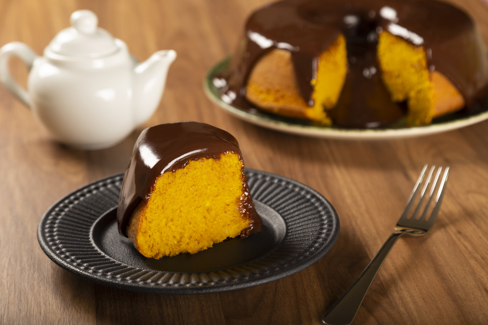

Ingredientes:
- 3 cenouras médias
- 3 ovos
- 1 xícara de óleo
- 2 xícaras de açúcar
- 2 xícaras de farinha de trigo
- 1 colher (sopa) de fermento em pó
Modo de Preparo:
- No liquidificador, bata as cenouras, os ovos e o óleo até obter uma mistura homogênea.
- Transfira a mistura para uma tigela e adicione o açúcar, a farinha de trigo e o fermento em pó, misturando até ficar uniforme.
- Despeje a massa em uma forma untada e enfarinhada.
- Leve ao forno preaquecido a 180°C por aproximadamente 40 minutos, ou até que um palito inserido no centro saia limpo.
- Retire do forno, deixe esfriar, desenforme e sirva.